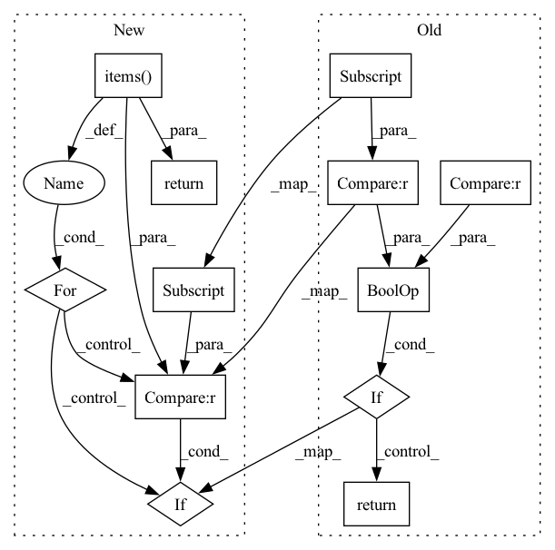

Pattern ID :12620
Before Change
return input
def random_vertical_offset(self, transform_config: dict, input: np.array, channel: ChannelEnum = None) -> np.array:
if channel is None or channel.value in transform_config["apply_to"] :
min, max = transform_config["min"], transform_config["max"]
if self.deterministic:
offset = self.rng.uniform(low=min, high=max)
else:
offset = np.random.uniform(low=min, high=max)
if channel is ChannelEnum.PARAMS:
transformed_input = input.clone()
transformed_input[3] = offset + transformed_input[3]
else:
transformed_input = offset + input
return transformed_input
return input
After Change
else:
offset = np.random.uniform(low=min, high=max)
for channel, value in data.items():
if channel.value in transform_config["apply_to"] :
if channel is ChannelEnum.PARAMS:
transformed_value = value.clone()
transformed_value[3] = offset + transformed_value[3]
else:
transformed_value = offset + value
data[channel] = transformed_value
return data
In pattern: SUPERPATTERN
Frequency: 3
Non-data size: 12
Instances Fragment ID: 42871182
Project Name: mstoelzle/solving-occlusion
Commit Name: 16789db20a95b30d2b206f7bce3d8517e19bbe1e
Time: 2020-10-24
Author: maximilian@stoelzle.ch
File Name: src/datasets/transforms.py
M Class Name: Transformer
N Class Name: Transformer
M Method Name: random_vertical_offset(3)
N Method Name: random_vertical_offset(4)
M Parent Class:
N Parent Class:
M File Name: src/datasets/transforms.py
N File Name: src/datasets/transforms.py
M Start Line: 68
M End Line: 85
N Start Line: 76
N End Line: 94
Before Change
return input
def random_vertical_scale(self, transform_config: dict, input: np.array, channel: ChannelEnum = None) -> np.array:
if channel is None or channel.value in transform_config["apply_to"] :
min, max = transform_config["min"], transform_config["max"]
if self.deterministic:
scale = self.rng.uniform(low=min, high=max)
else:
scale = np.random.uniform(low=min, high=max)
if channel is ChannelEnum.PARAMS:
transformed_input = input.clone()
transformed_input[3] = scale * transformed_input[3]
else:
transformed_input = scale * input
return transformed_input
return input
After Change
else:
scale = np.random.uniform(low=min, high=max)
for channel, value in data.items():
if channel.value in transform_config["apply_to"] :
if channel is ChannelEnum.PARAMS:
transformed_value = value.clone()
transformed_value[3] = scale * transformed_value[3]
else:
transformed_value = scale * value
data[channel] = transformed_value
return data
def random_vertical_offset(self, transform_config: dict,
data: Dict[ChannelEnum, torch.Tensor]) -> Dict[ChannelEnum, torch.Tensor]: Fragment ID: 42871183
Project Name: mstoelzle/solving-occlusion
Commit Name: 16789db20a95b30d2b206f7bce3d8517e19bbe1e
Time: 2020-10-24
Author: maximilian@stoelzle.ch
File Name: src/datasets/transforms.py
M Class Name: Transformer
N Class Name: Transformer
M Method Name: random_vertical_scale(3)
N Method Name: random_vertical_scale(4)
M Parent Class:
N Parent Class:
M File Name: src/datasets/transforms.py
N File Name: src/datasets/transforms.py
M Start Line: 49
M End Line: 66
N Start Line: 55
N End Line: 73
Before Change
return transformed_input
def random_noise(self, transform_config: dict, input: np.array, channel: ChannelEnum = None) -> np.array:
if channel is None or channel.value in transform_config["apply_to"] :
stdev = transform_config["stdev"]
if self.deterministic:
noise = self.rng.normal(loc=0, scale=stdev, size=tuple(input.size()))
else:
noise = np.random.normal(loc=0, scale=stdev, size=tuple(input.size()))
noise = input.new_tensor(noise, dtype=input.dtype)
transformed_input = input + noise
return transformed_input
return input
def random_vertical_scale(self, transform_config: dict, input: np.array, channel: ChannelEnum = None) -> np.array:
if channel is None or channel.value in transform_config["apply_to"]:After Change
stdev = transform_config["stdev"]
noise = None
for channel, value in data.items():
if channel.value in transform_config["apply_to"] :
if noise is None:
if self.deterministic:
noise_value = self.rng.normal(loc=0, scale=stdev, size=tuple(value.size()))
else:
noise_value = np.random.normal(loc=0, scale=stdev, size=tuple(value.size()))
noise = value.new_tensor(noise_value, dtype=value.dtype)
transformed_value = value + noise
data[channel] = transformed_value
return data
def random_vertical_scale(self, transform_config: dict,
data: Dict[ChannelEnum, torch.Tensor]) -> Dict[ChannelEnum, torch.Tensor]: Fragment ID: 42871186
Project Name: mstoelzle/solving-occlusion
Commit Name: 16789db20a95b30d2b206f7bce3d8517e19bbe1e
Time: 2020-10-24
Author: maximilian@stoelzle.ch
File Name: src/datasets/transforms.py
M Class Name: Transformer
N Class Name: Transformer
M Method Name: random_noise(3)
N Method Name: random_noise(4)
M Parent Class:
N Parent Class:
M File Name: src/datasets/transforms.py
N File Name: src/datasets/transforms.py
M Start Line: 33
M End Line: 47
N Start Line: 35
N End Line: 52